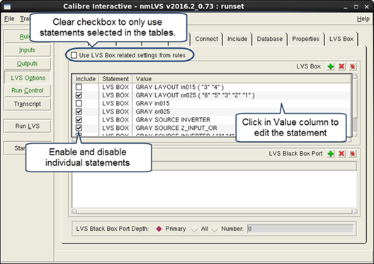

You can use Calibre Interactive to override
the LVS Box related statements in your rule file; this is done on
the LVS Box tab on the LVS Options pane.
You can add new statements, edit existing statements, and disable
statements. This feature is available in Calibre Interactive nmLVS,
Calibre Interactive PERC, and Calibre Interactive PEX.
Procedure
- Click LVS
Options to display the Options pane. If the button is
not available, choose ; similar steps
apply for Calibre Interactive PERC and PEX.
- Click the LVS
Box tab.
- Disable
“Use LVS Box related settings from rules.”
When “Use LVS Box related settings from rules” is unchecked,
only the LVS Box and LVS Black Box Port statements enabled in the LVS
Box tab are used in the Calibre run.
- The following
table lists possible actions:
Table 1. Changing
LVS Box Statements in Calibre InteractiveAction
|
Steps
|
|---|
Disable all LVS Box related
statements in the rule file.
|
Do one of the following:
Do not load
the rule file to populate the LVS Box and LVS Black Box Port tables.
If the tables are already populated, disable
all checkboxes in the Include columns or click to remove
all statements.
|
Disable or enable specific
statements.
|
Click Load on the
Rules pane to populate the tables.
Use the checkboxes in the Include columns
to select the statements that are included in the run.
|
Edit the parameters for
a statement.
|
Click Load on the
Rules pane to populate the tables.
Click in the Value column and edit the parameters.
|
Add a new LVS Box or
LVS Black Box Port statement.
|
(Optional) Click Load on
the Rules pane to populate the tables with rule file statements.
Do this if you want to run the rule file statements in addition
to the new statement.
Click to add
a new statement, then fill in the parameters in the Value column.
|
Note: The LVS Black Box Port statement is required if LVS Box
BLACK is specified. If you add a LVS Box BLACK statement, you must
also add the LVS Black Box Port statement—the GUI does not do this
automatically.
Figure 1. LVS Box
Tab in Calibre Interactive nmLVS
- (Optional)
Edit the settings for LVS Black Box Port Depth.
Results
When the “Use LVS Box related settings
from rules” checkbox is disabled, only the statements enabled in
the tables in the LVS Box tab are used in
the Calibre run. The statements enabled in the tables are written
to the Calibre Interactive control file.
Although multiple cells and pin swap lists can be specified in
a single LVS Box statement, such statements in the rule file are
broken up into multiple LVS Box statements when loaded into the table
in LVS Box tab.
Note: When you load a rule file,
all corresponding GUI settings are set to the settings in the rule
file. Therefore, any custom settings in the LVS Box tables are reset
to rule file settings when you load the rule file.